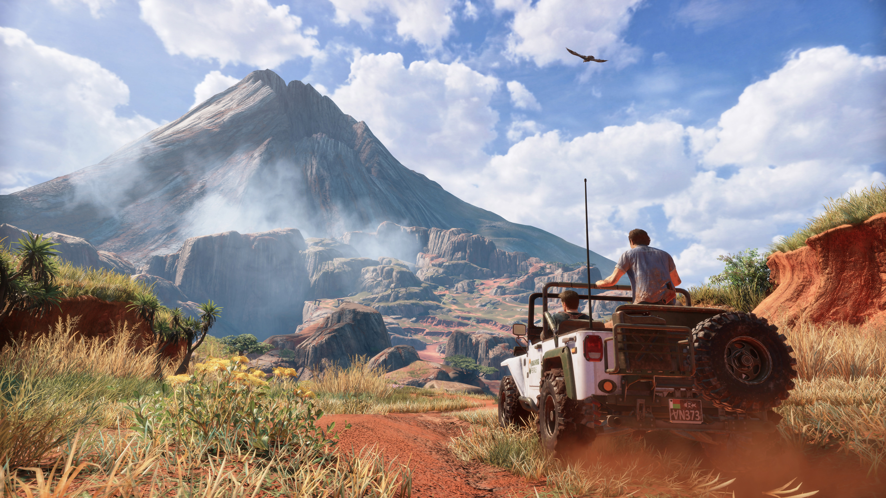

Uncharted

Uncharted é uma franquia de ação e aventura onde acompanhamos um caçador de tesouros chamado Nathan Drake.
Gênero: Aventura/Ação
Recursos do jogo:
- Modo História
- Multiplayer
- Puzzles
- Exploração
Skyrim

Em meio a uma sangrenta guerra civil, de repente os dragões misteriosamente voltam a Skyrim. Você assume o papel do herói Dragonborn, o herói capaz de salvar o mundo de Alduin.
Gênero: RPG
Recursos do jogo:
- Liberdade de progressão
- Sistema de criação
- Mundo aberto
- Suporte para MODS
LEGO: Batman

Legacy of the Dark Knight é um jogo que celebra a história do Batman, desde sua origem até fases marcantes de sua história.
Gênero: Aventura
Recursos do jogo:
- Mundo aberto
- Combate
- Puzzles
- Modo história
Minecraft
Jogo de sobrevivência em mundo aberto onde os jogadores exploram um universo infinito por blocos tridimensionais
Gênero: Exploração
Recursos do jogo:
- Mobs
- Multiplayer
- Sistema de crafting
- Mapas aleatórios